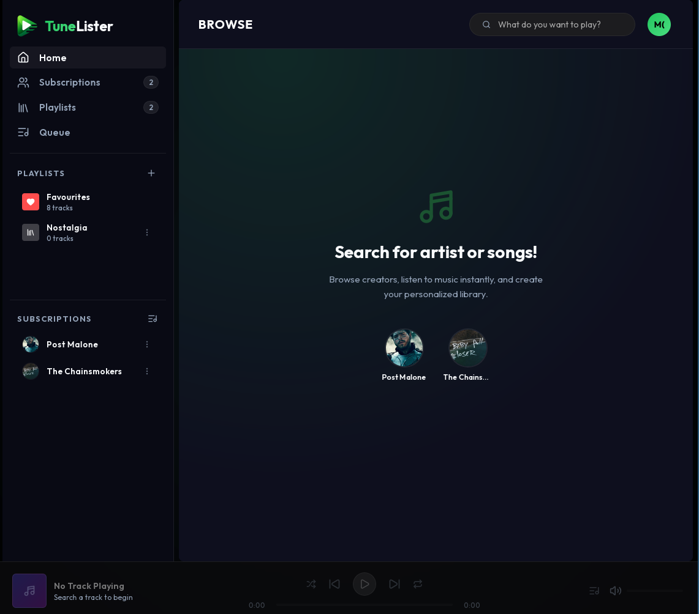
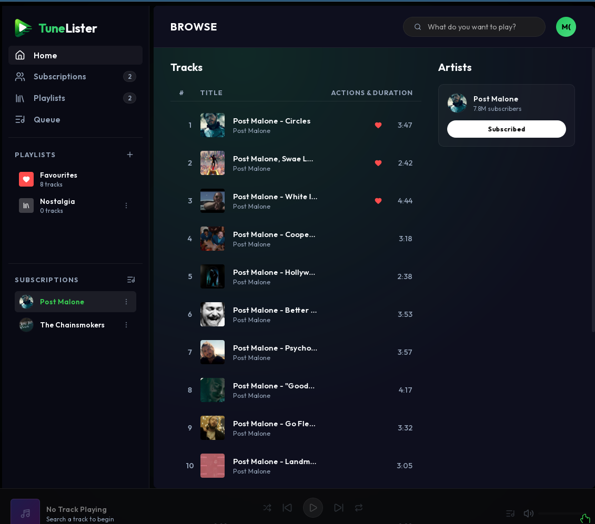
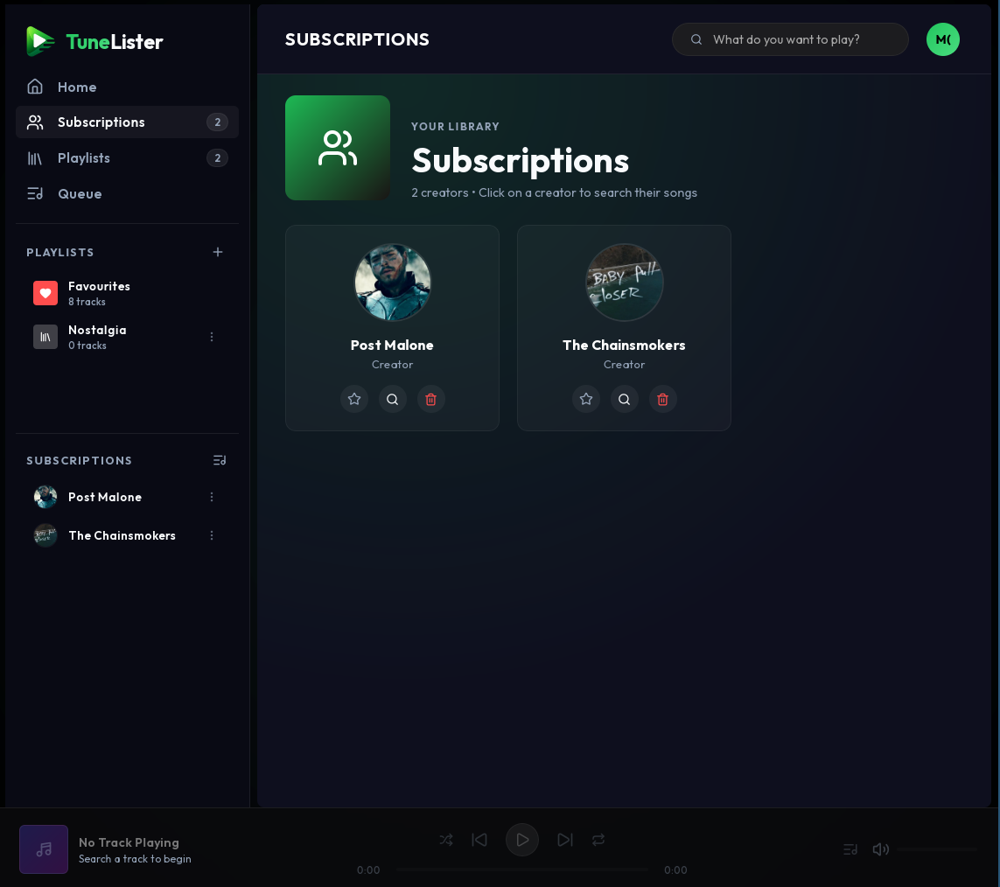
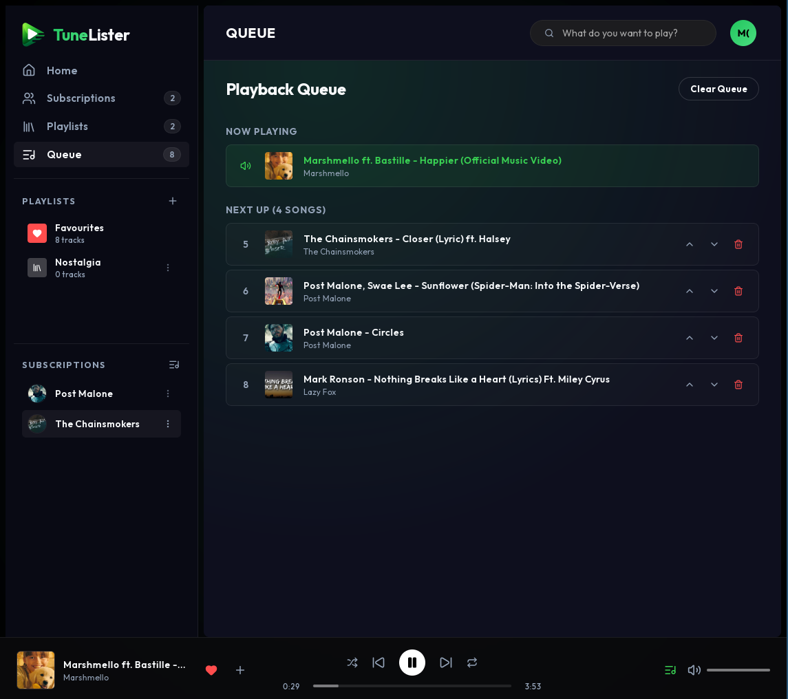

🌟 Main Favorites Dashboard
Your central audio hub. Access saved tracks with instantaneous decryption playback, search shortcuts, and synchronization statuses.

🏠 Home Landing Feed
Quickly access recently played tracks, explore quick recommendations, and review storage caching stats.

🔍 Search & Discover
Instantaneous query extraction with zero-latency live streaming. Hit or miss caching starts automatically in the background.

📡 Creator Subscriptions
Subscribe to content channels. When active audio queues end, the player pulls tracks from subscribed creators to continue streaming.

📋 Active Play Queue
Easily manage up-next audio schedules. Drag, add, or skip tracks with comprehensive metadata information overlays.